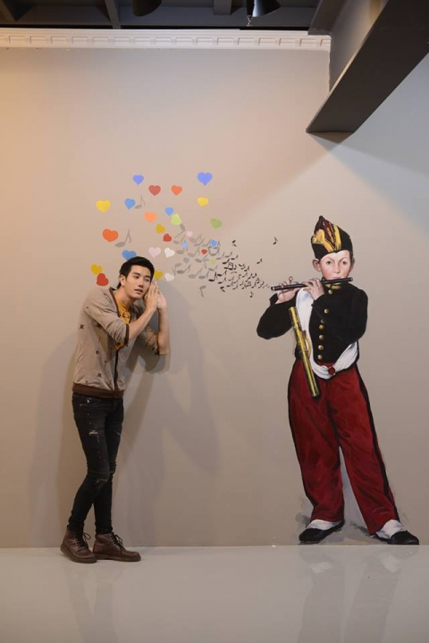

 พิพิธภัณอาร์ต 3 มิติกรุงเทพ เป็นพิพิธภัณฑ์ภาพวาด 3 มิติแห่งแรกในกรุงเทพ เริ่มเปิดให้เข้าชมอย่างเป็นทางการเมื่อวันที่ 22 กุมภาพันธ์ 2557 โดยมีความแตกต่างจากพิพิธภัณฑ์ทั่วไปคือ ไม่ใช่แค่การแสดงภาพจิตรกรรมให้รับชมเพียงอย่างเดียว แต่จะเน้นให้ทุกคนมีส่วนร่วมกับภาพวาดทุกภาพ และสามารถจินตนาการไปกับผลงานศิลปะได้ ประหนึ่งว่าเป็นส่วนหนึ่งของภาพ ซึ่งได้จัดให้มีห้องแสดงผลงานถึง 6 ห้อง รวม 150 กว่าภาพวาดด้วยแนวคิดที่แตกต่างกันไป โดยเฉพาะ Interactive Media ถือเป็นนิทรรศการรูปแบบใหม่ ที่สามารถโต้ตอบสนองปฏิกิริยาท่าทางและการเคลื่อนไหวของผู้ชมได้ เหมาะกับผู้ชมทุกวัย ทั้งครอบครัว เพื่อน หรือคู่รัก ก็สามารถเพลิดเพลินกับผลงานศิลปะที่นี่ได้
นอกจากที่ผู้ชมสามารถสัมผัสกับงานศิลปะได้อย่างใกล้ชิดแล้ว ยังสามารถเรียนรู้ไปกับผลงาน วัฒนธรรมแต่ละยุคสมัยที่สะท้อนผ่านภาพจิตรกรรม ทั้งในด้านของทัศนศิลป์ ทัศนียภาพ สองมิติและ สามมิติ ซึ่งภาพทุกภาพที่ถ่ายในพิพิธภัณฑ์ ยังสร้างความประทับใจ และเป็นภาพแห่งความทรงจำที่งดงามอีกด้วย